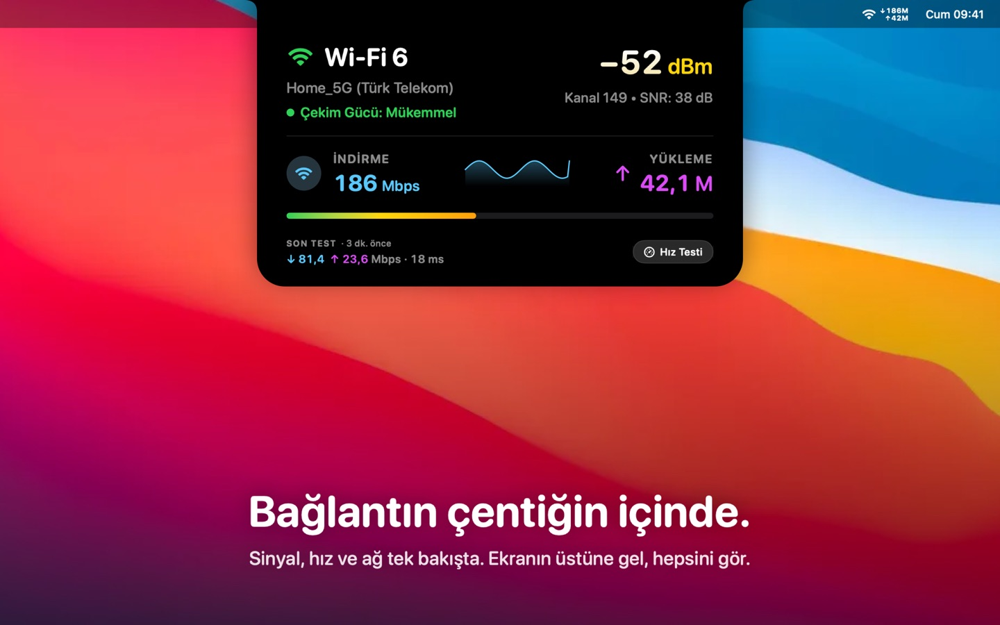

Bağlantın çentiğin içinde.
NotchFi, Mac'inin sinyalini, canlı hızını ve veri kullanımını çentiğin hemen yanında ve menü çubuğunda gösterir. iPhone Hotspot için yapıldı, yolda da çalışır.

- Çentiğin yanında island — üzerine gel; sinyal, hız, 60 saniyelik grafik ve son hız testin açılsın.
- iPhone Hotspot'u tanır — operatör adı, mobil veri takibi ve %80/%100 kota uyarıları.
- Tek tıkla hız testi — indirme, yükleme, gecikme ve titreşim; kotalı ağlarda daha hafif.
- Tasarımı gereği gizli — hesap yok, analiz yok, hiçbir şey toplanmaz.
- 45 dil, VoiceOver ve Hareketi Azalt desteği. macOS 14 veya sonrası.
Mac App Store'da.